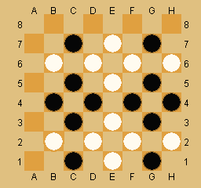

The question: starting from the standard starting position, what class of board positions are unreachable. I can think of two:
| All positions with two or fewer stones (of any mix of colors) are unreachable, because one of the players would have won before the last move was made. |
| All positions with no stones of one color are unreachable (because the game would have passed through "one stone of color remaining", which is a win. |
| Positions in which no piece has been captured and both white and black have all of their pieces united. The reason that this is unreachable is that whoever didn't move last must have united his pieces on the move before last and the game would have ended. |
| Positions in which both white and black have all of their remaining pieces connected AND every piece borders a piece of the other color. This is unreachable for a similar reason to the class above: even if the last move was a capture, the player who made the preceding move would have completed a winning configuration and the game would have ended. |
Jorge Gómez Arrausi has pointed out a related class of unreachable positions
| Positions in which one player is connected , but neither player could have created the connected position. In positions such as the one at the left, it is straighforward to generate all possible white predecessor positions, which have one of the white stones at some other position on the board, and possibly has a black stone where the white stone is now. In the board at the left, there are exactly 330 such hypothetical white predecessors. Similarly, black must have created this position by capturing an isolated white stone, and since all black stones are adjavent to white, black could not have just created this position. |
The common thread in these classes of unreachable position seems to be the argument that the game would have already ended. Are there any unreachable conditions that dont depend on this argument?
Related sub-questions:
|  | This elegant solution uses just 24 pieces, the same number as the normal
starting position. This position was devised by Joseph
DeVincentis, as solution to a puzzle for a rather strange game known
as Ackanomic.
His message describing how he derived this solution is quite informative This stalemate position has a predecessor, seen at the right, but of
course, that position has more than the standard number of black pieces,
so could not arise in a regulation game.
|
| E-mail: | Go to BoardSpace.net home page |